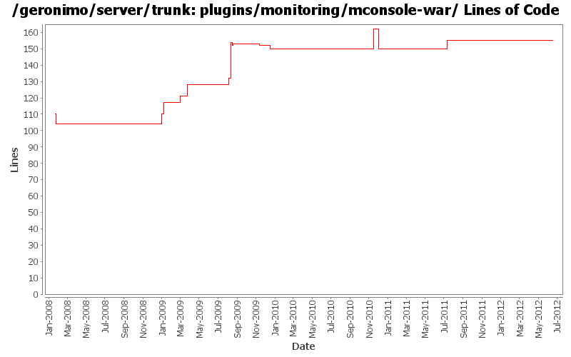

[root]/plugins/monitoring/mconsole-war
 src
(0 files, 0 lines)
src
(0 files, 0 lines)
 main
(0 files, 0 lines)
main
(0 files, 0 lines)
 i18n-resources
(6 files, 543 lines)
i18n-resources
(6 files, 543 lines)
 java
(0 files, 0 lines)
java
(0 files, 0 lines)
 org
(0 files, 0 lines)
org
(0 files, 0 lines)
 apache
(0 files, 0 lines)
apache
(0 files, 0 lines)
 geronimo
(0 files, 0 lines)
geronimo
(0 files, 0 lines)
 monitoring
(0 files, 0 lines)
monitoring
(0 files, 0 lines)
 console
(6 files, 2618 lines)
console
(6 files, 2618 lines)
 data
(3 files, 524 lines)
data
(3 files, 524 lines)
 util
(1 files, 175 lines)
util
(1 files, 175 lines)
 resources
(0 files, 0 lines)
resources
(0 files, 0 lines)
 webapp
(1 files, 56 lines)
webapp
(1 files, 56 lines)
 WEB-INF
(3 files, 168 lines)
WEB-INF
(3 files, 168 lines)
 classes
(0 files, 0 lines)
classes
(0 files, 0 lines)
 META-INF
(1 files, 35 lines)
META-INF
(1 files, 35 lines)
 view
(14 files, 3822 lines)
view
(14 files, 3822 lines)

| Author | Changes | Lines of Code | Lines per Change |
|---|---|---|---|
| Totals | 27 (100.0%) | 104 (100.0%) | 3.8 |
| xuhaihong | 3 (11.1%) | 29 (27.9%) | 9.6 |
| rwonly | 2 (7.4%) | 18 (17.3%) | 9.0 |
| djencks | 8 (29.6%) | 18 (17.3%) | 2.2 |
| dwoods | 3 (11.1%) | 14 (13.5%) | 4.6 |
| genspring | 1 (3.7%) | 11 (10.6%) | 11.0 |
| jbohn | 1 (3.7%) | 7 (6.7%) | 7.0 |
| rickmcguire | 1 (3.7%) | 3 (2.9%) | 3.0 |
| gawor | 2 (7.4%) | 2 (1.9%) | 1.0 |
| xiaming | 1 (3.7%) | 1 (1.0%) | 1.0 |
| kevan | 1 (3.7%) | 1 (1.0%) | 1.0 |
| jdillon | 4 (14.8%) | 0 (0.0%) | 0.0 |
Update trunk version to 4.0.0-SNAPSHOT
1 lines of code changed in 1 file:
GERONIMO-5599 Reenable monitoring admin console portlets, Patch from Shenghao Fang.
11 lines of code changed in 1 file:
revert the changes in rev 1035140 (GERONIMO-5655), since tomcat taglibs seems will not release in short time.
3 lines of code changed in 1 file:
GERONIMO-5655 switch to tomcat standard taglibs
15 lines of code changed in 1 file:
GERONIMO-5290 fix many of the deprecation warnings from maven 3
5 lines of code changed in 1 file:
remove jee-specs config. not needed anymore
2 lines of code changed in 1 file:
use bundleized dwr. Start trying to not use spring in pluto. Mysterious linkage error building console-tomcat
1 lines of code changed in 1 file:
fix problem in EarConfigBuilder when constructing sub-configurations for wars. Rename DeploymentContext.getBundle to getDependencyBundle to try to make it clearer that it is temporary and not always available. Start updating pluto/console stuff for pluto 2.
2 lines of code changed in 1 file:
some initial jetty changes
3 lines of code changed in 1 file:
Upgrade to ee6 specs for servlet, ejb. Upgrade to jetty 8. Use jpa 1.0 spec labelled 1.0. Don't try to include openwebbeans until it has available snapshots
1 lines of code changed in 1 file:
GERONIMO-4793 Remove those duplicated jars in the lib folder of the console applications
2 lines of code changed in 1 file:
GERONIMO-4655 upgrade version to 3.0-SNAPSHOT, make a few things more consistent
1 lines of code changed in 1 file:
[maven-release-plugin] prepare branch 2.2
3 lines of code changed in 1 file:
GERONIMO-4769 Add English resource bundle for Admin console (Patch from Jack Cai)
22 lines of code changed in 1 file:
GERONIMO-4763 i18n properties files should be converted to ascii at build time. (Patch from Shawn Jiang)
5 lines of code changed in 1 file:
GERONIMO-4597 Validate Web Admin Console input - fixes for CVE-2008-5518, CVE-2009-0038, and CVE-2009-0039
7 lines of code changed in 1 file:
GERONIMO-4560 fix build problems from previous commit. Not sure if testsuite is completely stable
4 lines of code changed in 1 file:
GERONIMO-4484 Extraction, localization and display of messages generated in portlets. Applied common-message-monotor.patch from Gang Yin.
7 lines of code changed in 1 file:
GERONIMO-4474 Pull out the text in the JSP files to resource bundle files. Patches provided by Gang Yin.
6 lines of code changed in 1 file:
GERONIMO-4415 use jpa for data access in monitoring console
1 lines of code changed in 1 file:
GERONIMO-4292 Monitoring console is pulling in DWR 2.0.1
1 lines of code changed in 1 file:
Drop *most* per-module legal muck, a few modules have additions to the standard... so left them in place for resolution later
0 lines of code changed in 2 files:
upgrade trunk to 2.2-SNAPSHOT
1 lines of code changed in 1 file:
unnecessary dependency (and if it was needed, geronimo version should be used instead)
0 lines of code changed in 1 file:
Update module names
0 lines of code changed in 2 files: